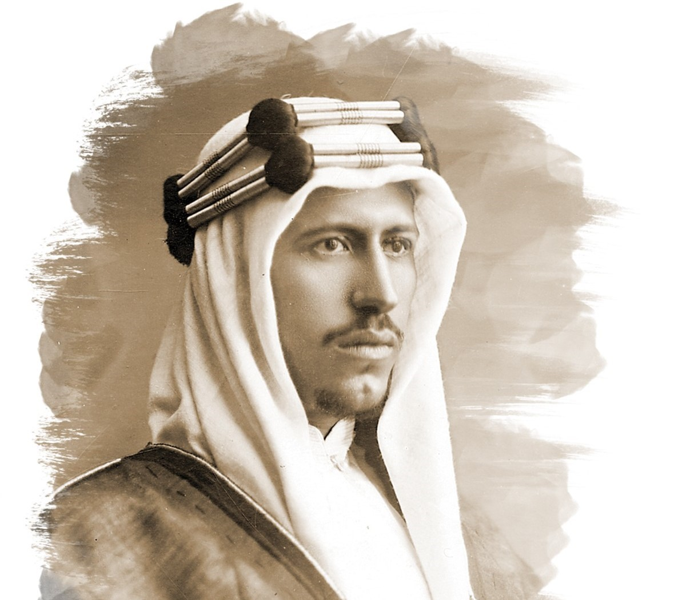

«لقد ملكتُ هذه البلاد التي هي تحت سلطتي بالله ثم بالشيمة العربية، وكل فرد من شعبي هو جندي وشرطي، وأنا أسير وإياهم كفرد واحد، لا أفضل نفسي عليهم ولا أتبع في حكمهم غير ما هو صالح لهم حسبما جاء في كتاب الله وسنة رسوله صلى الله عليه وسلم»
 «تولينا حكم المملكة العربية السعودية.. معتزين بهذا التراث المجيد الذي ورثناه كابرًا عن كابر، والذي أسس على تقوى الله وطاعته، دستوره القرآن الكريم، وعماده سنة محمد صلى الله عليه وسلم؛ فعلى أسسه نحن ماضون».
«إن إيمان هذا الشعب بالله، وتماسكه وتفانيه في خدمة وطنه والكفاح في سبيل استقلاله وحريته هو السبيل الذي أوصل هذا الشعب وهذا البلد الكريم إلى ما هو عليه الآن».
«استطاع الملك عبد العزيز وبفضل الله أن يؤسس هذا الكيان الكبير، ليعيد له الأمن بمعايير يعز على الآخرين الوصول إليها، ويحقق لشعبه أفضل مستويات الحياة الإنسانية المرفهة والمستقرة، حتى أصبحت بلادنا مضرب الأمثال في العزة والكرامة والتقدم والازدهار».
«قامت الدولة السعودية الأولى منذ أكثر من قرنين ونصف على الإسلام، وعلى منهاج واضح في السياسة والحكم والدعوة والاجتماع»
«إن بلادنا ولله الحمد شهدت منذ تأسيسها على يد الموحد الملك عبد العزيز -يرحمه الله- نهضة حضارية شاملة، استهدفت الإنسان السعودي في عيشه وعمله وأمنه وصحته وتعليمه».
«جاءت الدولة السعودية لتعيد الاستقرار لهذه المنطقة على نهج الدولة الإسلامية الأولى، وتوحد أغلب أجزائها في دولة واحدة، تقوم على الكتاب والسنة، لا على أساس إقليمي أو قبلي أو فكر بشري منذ أكثر من مئتين وسبعين سنة»
" لدينا عمق تاريخي مهم جداً موغل بالقدم ويتلاقى مع الكثير من الحضارات. الكثير يربط تاريخ جزيرة العرب بتاريخ قصير جداً، والعكس أننا أمة موغلة في القدم "